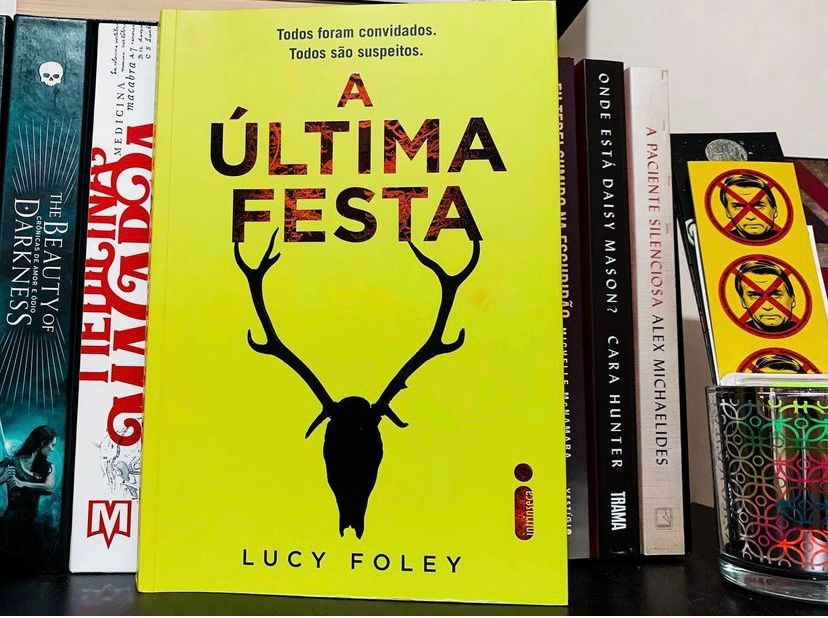

A Última Festa
“ t𝘛𝘰𝘥𝘰 𝘢𝘯𝘰, 𝘯𝘰𝘷𝘦 𝘢𝘮𝘪𝘨𝘰𝘴 𝘤𝘰𝘮𝘦𝘮𝘰𝘳𝘢𝘮 𝘰 𝘳é𝘷𝘦𝘪𝘭𝘭𝘰𝘯 𝘫𝘶𝘯𝘵𝘰𝘴. 𝘋𝘦𝘴𝘵𝘢 𝘷𝘦𝘻, 𝘢𝘱𝘦𝘯𝘢𝘴 𝘰𝘪𝘵𝘰 𝘷ã𝘰 𝘷𝘰𝘭𝘵𝘢𝘳 𝘱𝘢𝘳𝘢 𝘢 𝘤𝘢𝘴𝘢 𝘥𝘦𝘱𝘰𝘪𝘴 𝘥𝘢 𝘧𝘦𝘴𝘵𝘢.”
Programado para acontecer em um cenário idílico, o réveillon que Miranda, Katie e os outros amigos que conheceram na faculdade passarão juntos este ano promete refeições deliciosas regadas a champanhe, música, jogos e conversas descontraídas.
No entanto, as tensões começam já na viagem de trem — o grupo não tem mais nada em comum além de um passado de convivência, feridas jamais cicatrizadas e segredos potencialmente destrutivos. E então, em meio à grande festa da última noite do ano, o fio que os mantém unidos enfim arrebenta. No dia seguinte, alguém está morto e uma forte nevasca impede a vinda do resgate. Ninguém pode entrar. Ninguém pode sair. Nem o assassino.
Nesse thriller Lucy Foley traz personagens que são detestáveis, sabe gente rica? Com problema de gente rica e picuinhas fora realidade? Eu não consegui me identificar com nenhum personagem desse “grupinho seleto e privilegiado” de amigos. Tem 2 aí que salvam kkkkk
Mas, Lucy Foley conseguiu fazer algo muito legal, a história é contada intercalando o presente (pós réveillon) quando o assassinato já ocorreu e estão solicitando ajuda da polícia e o “passado” (tudo que aconteceu nessa viagem até chegar aquele ponto), existem também flashbacks sobre a vida deles antes daquela viagem. Os capítulos são narrados do ponto de vista de 5 personagens e acreditem você passa a livro inteiro sem saber quem é o assassino e quem é a VÍTIMA! Tudo é revelado bem no finalzinho, e por isso temos que dar crédito a essa autora pela criatividade e por conseguir conduzir a gente bem até o final, sem ter vontade de parar!
Confesso que já tinha uma uma ideia de quem seria a vítima. Mas o assassino me enganou direitinho Super recomendo, principalmente pela forma que a autora resolveu conduzir tudo.